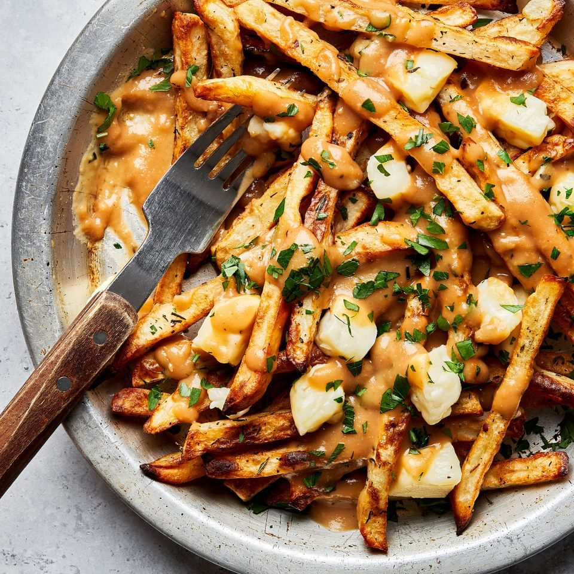

Cheese-Fries
Cheese fries are a delicious and indulgent snack or side dish that combines the savory flavors of crispy french fries with melted cheese. They are a popular choice for those who enjoy a comforting and cheesy treat.Cheese fries are perfect as an appetizer, snack, or side dish for gatherings, movie nights, or casual get-togethers. They are sure to satisfy your craving for a cheesy and comforting treat.Disco-Fries
Disco fries are a popular American dish that originated in the New Jersey and New York area. They are a variation of poutine fries and are typically served as a late-night snack or a comforting meal.Disco fries are all about the combination of crispy fries, gooey melted cheese, and rich gravy. The flavors come together to create a comforting and satisfying experience. While disco fries typically use mozzarella cheese, you can experiment with different cheeses to suit your preference. Some variations include using cheddar, Swiss, or a blend of cheeses.Garlic-Fries
Garlic fries are a flavorful and aromatic variation of the classic french fries. They are known for their irresistible garlic-infused taste and are a popular choice for those who enjoy the bold flavors of garlic.Garlic fries are a popular choice at sports events, casual gatherings, or anytime you want to enjoy a flavorful and satisfying snack. They are sure to tantalize your taste buds with their garlic goodness.peri-peri-Fries
Peri-peri fries are a delicious and spicy twist on classic french fries. They are seasoned with peri-peri spice, which adds a flavorful kick to the fries. Peri-peri, also known as piri-piri, is a spicy chili pepper seasoning commonly used in Portuguese and African cuisine. Peri-peri fries are a great accompaniment to burgers, grilled meats, or enjoyed on their own as a tasty snack. They bring a fiery and exciting twist to the classic french fries.
Poutine-Fries
Poutine fries are a Canadian specialty that combines crispy french fries with cheese curds and rich gravy. This indulgent dish is known for its comforting and savory flavors. Poutine fries are a popular dish in Canada and can be found in many restaurants and food stands. They are enjoyed as a snack, appetizer, or even as a main course. The combination of flavors and textures make poutine fries a truly satisfying and indulgent treat.